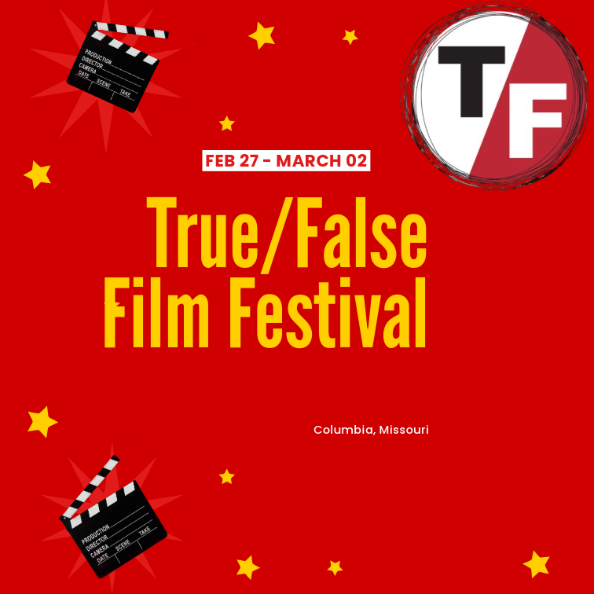

.png)

.png)
.png)
A Journey Through Digital Creativity
Diving into the world of web development opened new horizons. Through hands-on experience with HTML5 and CSS Grid, I discovered the art of creating responsive layouts that adapt seamlessly across devices. Git became my trusted companion, teaching me the value of organized development and collaboration.
Exploring the fundamentals of design through CARP principles transformed my approach to visual communication. Each element became a building block in creating harmonious layouts, where contrast creates emphasis, alignment brings order, repetition builds rhythm, and proximity guides the eye through information.

A dynamic system that organizes content along a single axis. My implementation aligns exhibition details along a diagonal axis, using Futura PT to emphasize the flow of information and create a strong visual direction.

Text elements arranged in circular patterns, radiating from a central point. The design creates a sense of movement that reflects the cyclical nature of everyday moments in Kawauchi's work.
Typography expands from a central point, creating depth and perspective. This system emphasizes the exhibition's theme of personal movements expanding into universal journeys.
Creates controlled chaos while maintaining visual harmony. The design reflects the unpredictable nature of everyday moments captured in Kawauchi's photography.
Employs systematic organization through a modular grid, creating clear hierarchies while maintaining professional presentation of exhibition information.
.png)
Uses repeating units to create rhythm and structure. The text is broken into modular blocks, creating a pattern that echoes the exhibition's exploration of recurring life moments.
Creates flow through gradual changes in text arrangement. Typography shifts in size and weight to guide viewers through the exhibition information with visual movement.
Achieves balance through symmetrical arrangement. Content mirrors across a central axis, creating a formal presentation that emphasizes the exhibition's professional nature.
My journey through design fundamentals has been transformative, challenging my preconceptions and expanding my creative horizons. The fusion of technical skills and artistic expression opened new pathways in my understanding of digital design.
The HTML project served as my gateway into the technical realm of web development. Each line of code written was a step toward understanding the structure that underlies every digital experience. The satisfaction of seeing my first responsive design adapt seamlessly across devices ignited a passion for technical excellence.
CARP principles reshaped my understanding of visual communication. These fundamental elements became my tools for creating order from chaos, helping me transform simple layouts into engaging visual experiences. Through countless iterations and experiments, I discovered how subtle adjustments in contrast, alignment, repetition, and proximity could dramatically impact user engagement.
Typography emerged as a surprising passion, revealing itself as much more than just text on a screen. Each typeface became a voice, each spacing decision a breath, and each hierarchy choice a guide for the user's journey. The artistry of typography taught me that every detail matters in creating meaningful digital experiences.
Looking ahead, I see endless opportunities for growth. The foundation built through these projects has equipped me with both technical skills and design sensibilities. Yet, I recognize that design is an ever-evolving field. Each project has been a stepping stone toward understanding that great design is about solving problems creatively while maintaining a deep respect for user needs.